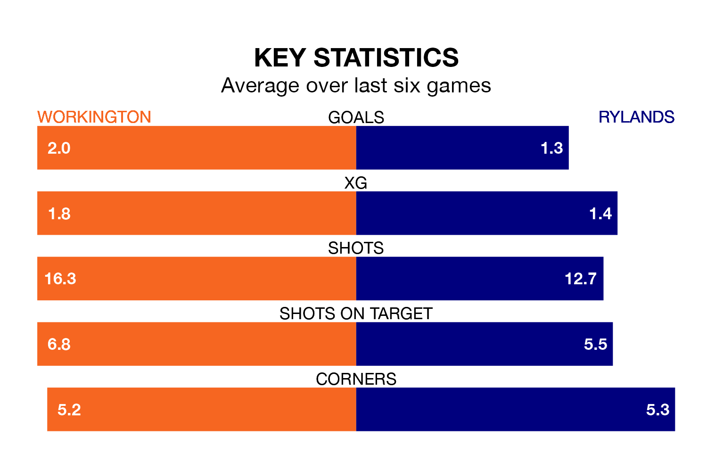

Workington face a challenge to maintain their high-scoring form at home against a tight Rylands defence on Saturday.
With 52 goals in 26 games, Workington are the joint-third-highest scorers in Northern Premier League ahead of the 3pm kick-off at Borough Park.
They face a Rylands side who have scored 40 in 25 matches, but conceded only 24 goals, putting them top of the league's tightest defences.
Rylands are second in the table after 25 games, of which they have won 13 and drawn nine, earning 48 points.
Workington are 14 places behind the visitors in 16th, with eight wins and eight draws putting them on 32 points.
The home team are in disappointing form in Northern Premier League, with one win and three draws from their last six games.
With two wins and three draws over that period, Rylands's form is better – they have taken nine points from 18, compared to Workington's six.
In the last three years, Workington and Rylands have played each other on three occasions. Rylands won two of them and they drew once.
Their last meeting was on October 10, when Rylands won 1-0 at home.
Workington's last match was on January 6, a 3-1 loss against Radcliffe Borough.
Rylands beat Whitby Town 1-0 last time out, on January 13.
Updated: 13:09 (UTC), 17/01/24